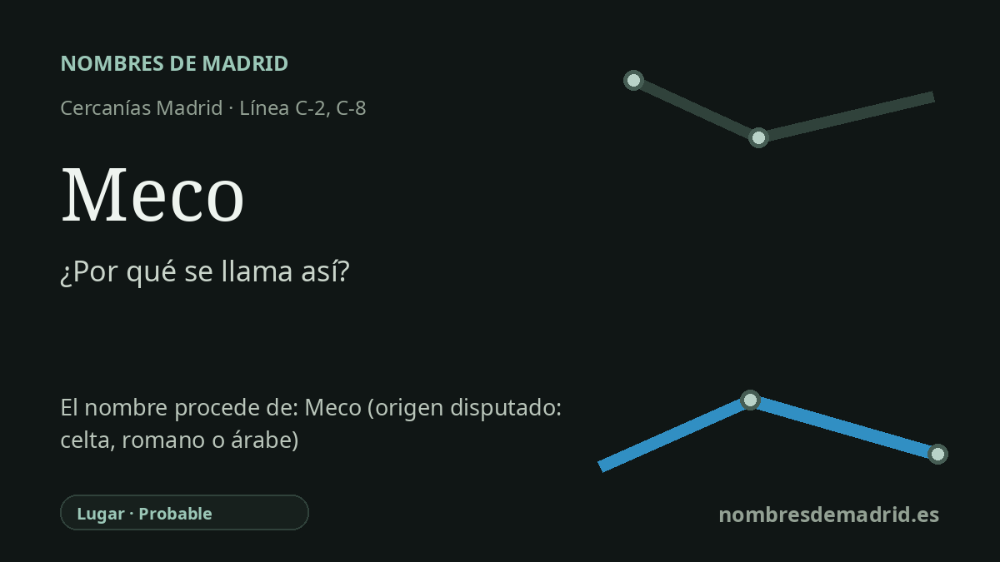

Publicado el · Investigación de Nombres de Madrid · Cómo verificamos cada origen · 8 fuentes consultadas
Respuesta rápida
La estación de Meco toma su nombre del municipio al que sirve. El topónimo es antiguo y discutido, con explicaciones celtas, romanas y árabes en circulación, pero ninguna fuente disponible demuestra de forma decisiva una etimología.
La historia del nombre
La estación de Meco se llama así por Meco, el municipio del este de la Comunidad de Madrid en cuyo término se encuentra. Las fuentes actuales de transporte la identifican de forma directa como Meco: Adif registra la estación 70104 con ese nombre y el Consorcio Regional de Transportes de Madrid la sitúa en las líneas de Cercanías C-2 y C-8, con acceso por la Travesía de la Calera, en Meco.
La cuestión más difícil es qué significaba originalmente el topónimo Meco. Un resumen útil apareció en El País en 1995: los especialistas manejaban tres posibilidades generales, una forma celta miccon relacionada con la oveja, un Miaccum romano vinculado a una casa de campo o establecimiento viario, y un maksusk árabe glosado como algo parecido a monte pelado. Ese abanico de teorías encaja con la arqueología estratificada y el paisaje de la campiña del Henares, pero también muestra el problema: las mismas huellas históricas pueden usarse para sostener relatos distintos.
La explicación romana resulta especialmente tentadora porque Miaccum es un nombre antiguo conocido por el Itinerario de Antonino. Algunos textos locales antiguos o divulgativos conectaron Miaccum con Meco, pero la discusión arqueológica reciente ha desplazado el argumento más fuerte fuera de Meco. La página de la Comunidad de Madrid sobre El Beneficio indica que, tras excavaciones de comienzos del siglo XXI, algunos investigadores propusieron que el yacimiento de Collado Mediano fuese la posada Miaccum citada en el Itinerario; la publicación arqueológica de Jesús Jiménez Guijarro presenta El Beneficio como un establecimiento viario romano relacionado con la vía XXIV.
Las propuestas árabe y celta siguen formando parte de la tradición local, pero son más difíciles de comprobar con las fuentes en línea consultadas. La explicación árabe resulta sugerente porque el pueblo se asienta en una elevación despejada y porque la ocupación islámica forma parte de la historia regional, aunque la presencia arqueológica no equivale por sí sola a una derivación lingüística demostrada. La explicación celta vinculada a la oveja también encaja con un paisaje ganadero, pero necesita una fuente filológica más sólida antes de tratarse como algo más que una hipótesis.
La única relación segura es que la estación toma su nombre del municipio de Meco. El origen del nombre municipal sigue discutido: ninguna derivación celta, romana o árabe está demostrada.